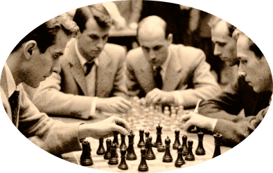

Чтобы поддержать Международный васюкинский турнир  посетите лекцию на тему: «Плодотворная дебютная идея»

и Сеанс одновременной игры в шахматы на 160 досках гроссмейстера О.Бендера
| Место проведения: | Клуб «Картонажник» |
| Дата и время мероприятия: | 22 июня 1927 г. в 18:00 |
| Стоимость входных билетов: | 20 коп. |
| Плата за игру: | 50 коп. |
| Взнос на телеграммы: | 100 руб 21 руб. 16 коп. |
По всем вопросам обращаться в администрацию к К. Михельсону
Этапы преображения
Васюков Будущие источники обогащения васюкинцев
-
1
Строительство железнодорожной магистрали Москва-Васюки
-
2
Открытие фешенебельной гостиницы «Проходная пешка» и других небоскрёбов
-
3
Поднятие сельского хозяйства в радиусе на тысячу километров: производство овощей, фруктов, икры, шоколадных конфет
-
4
Строительство дворца для турнира
-
5
Размещение гаражей для гостевого автотранспорта
-
6
Постройка сверхмощной радиостанции для передачи всему миру сенсационных результатов
-
7
Создание аэропорта «Большие Васюки» с регулярным отправлением почтовых самолётов и дирижаблей во все концы света, включая Лос-Анжелос и Мельбурн